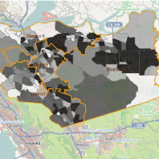
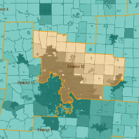
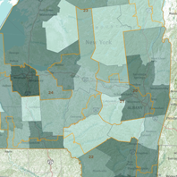

DistrictBuilder is web-based, open source software for collaborative redistricting.
Customizable open source software built by experts
DistrictBuilder was developed in collaboration with leading redistricting experts at the Public Mapping Project. Whether you work for a state or local government agency, an advocacy group or you are a legislator, DistrictBuilder has been designed to provide you with affordable, easy-to-use, customizable redistricting tools that make the redistricting process more open and collaborative across agencies and with the public.
Main Features
- Create and edit district plans
- Use template plans to get started faster
- Import and merge plans from other systems
- Display demographics, election and other data
- Integrate with GoogleMaps, Esri ArcGIS Online, OpenStreetMap or Bing maps
- Show additional reference map layers, like school districts and administrative boundaries
- Automatically calculate contiguity, compactness and population statistics as you create your plan
- Customize demographic, geographic and election data statistics on-the-fly as you build your plan
- Find unassigned areas
- Draw communities of interest and evaluate a plan against them
- Evaluate how closely your proposed plan matches legal requirements
- Save and share your plans via a URL link
- Support public competitions, scoring and leaderboards
Open source license means it's both affordable and part of a community
Unlike proprietary solutions, DistrictBuilder is open source so you don't have to pay a license fee. If your team has the expertise, you can download the source code and build your own redistricting application. Or our dedicated DistrictBuilder implementation team can work hand-in-hand with you to create the perfect application for your needs. And if we built a new feature for your application, it is immediately contributed back to the community of users. The more you add, the more we give back.
System Requirements
The software is built using several open source technologies including:
- Django
- Celery
- PostgreSQL
- GeoServer
- jQuery
- PostGIS
The software can be hosted in several environments:
Discover Who's Using DistrictBuilder
CA
Contra Costa County

AZ
Competitive
Districts Coalition

PA
Fix Philly Districts
Competition
OH
Ohio Redistricting

VA
Redistricting
Competition
MN
Draw Minnesota

NY
Redistrict NY

IN
Marion County
VT
Burlington
DistrictBuilder
Documentation
Open Source
Unlike proprietary solutions, DistrictBuilder is open source so you don't have to pay a license fee. If your team has the expertise, you can download the source code and build your own redistricting application. Or our dedicated DistrictBuilder implementation team can work hand-in-hand with you to create the perfect application for your needs. And if we built a new feature for your application, it is immediately contributed back to the community of users. The more you add, the more we give back.
Services
Open source code base can be daunting if you do not have the technical expertise on your team to build the application. Implementation usually requires:
- Database development
- Software development
- Graphic design
- Competition setup
- Software customization
- Training
- Hosting
Our software partner, Azavea, provides implementation support and customization services.
Support
Report bugs on GithubAcknowledgements
Principal Investigators:Michael P. McDonald and Dr. Micah Altman, as part of the Public Mapping Project
Software Development:
Azavea